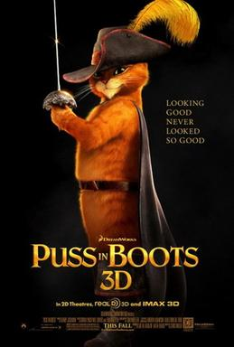

Puss in Boots is a 2011 American animated adventure comedy film[4][5] produced by DreamWorks Animation and distributed by Paramount Pictures[a]. It is a spin-off of the Shrek film series and its fifth installment, rather than an adaptation of the fairytale "Puss in Boots". The film was directed by Chris Miller from a screenplay by Tom Wheeler and a story by Brian Lynch, Will Davies, and Wheeler, based on the character from Shrek 2 (2004) and inspired from the Puss in Boots fairy tale. It stars Antonio Banderas (reprising his voice role as Puss in Boots), alongside Salma Hayek, Zach Galifianakis, Billy Bob Thornton, and Amy Sedaris. The film follows the origin story of Puss in Boots (Banderas) during his adventure years before the events of Shrek 2. Accompanied by his friends, Humpty Dumpty (Galifianakis) and Kitty Softpaws (Hayek), Puss is pitted against Jack and Jill (Thornton and Sedaris), two murderous outlaws, for ownership of three legendary magical beans that lead to a great fortune of Golden Eggs from the Great Terror, a gigantic Goose.
